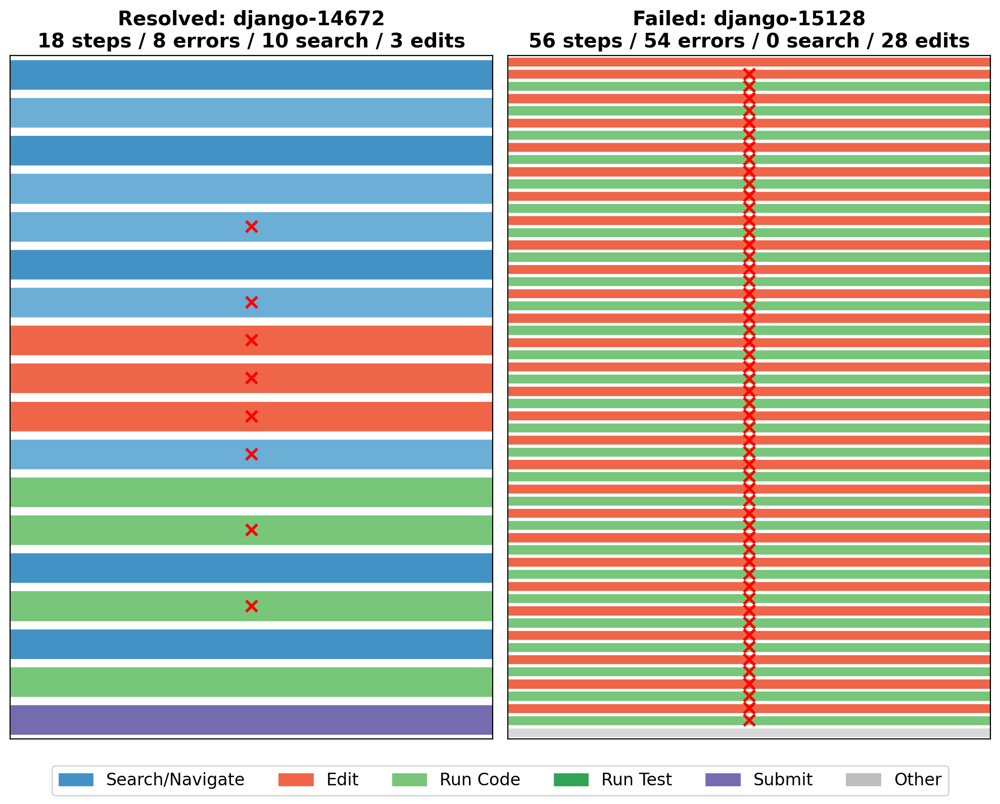
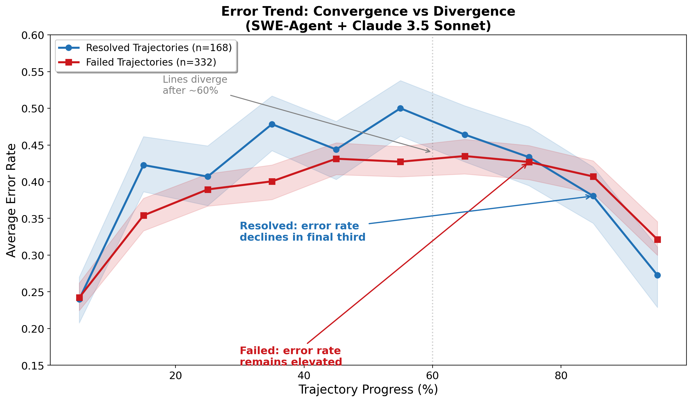
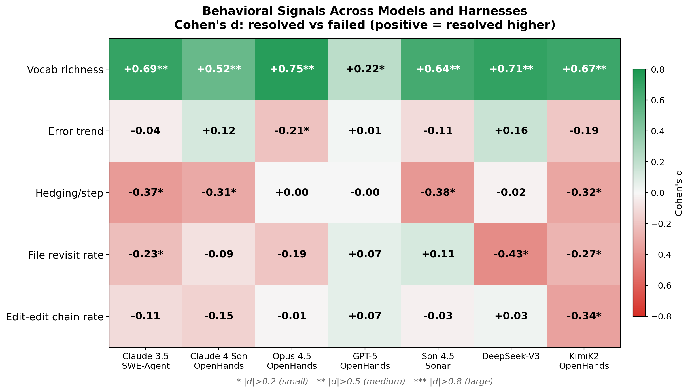
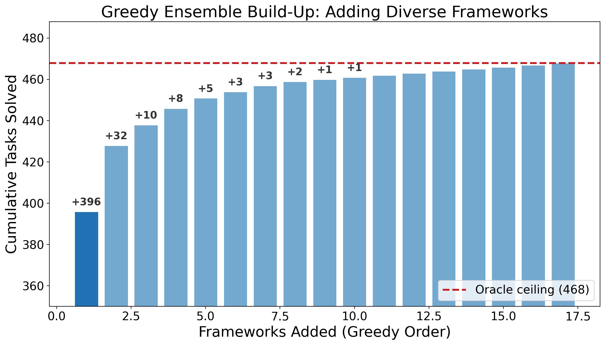
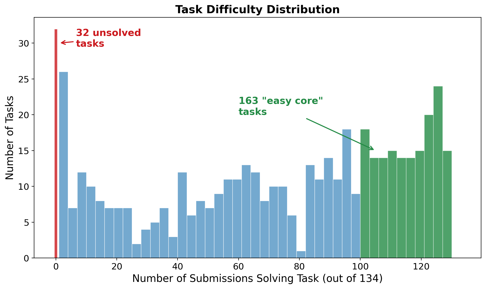

I downloaded every publicly available trajectory from the SWE-bench Verified leaderboard -- 48,580 runs across 134 different AI agent systems -- and pulled out 40+ behavioral features from each one. I was looking for a handful of signals that tell us whether an agent run is headed for success or failure, regardless of framework, model, or problem.
That is not what came out of the data.
Some terminology: a run is one attempt by an agent to solve a task. A trajectory (or trace) is the full log of that run -- every step, every file read, every edit, and the agent's reasoning along the way. I use these interchangeably below.
The signals people track -- error rates, strategy patterns, step counts -- shift meaning depending on the framework, the model, and the problem. The one signal that held up most consistently is something none of the standard observability tools (LangSmith, LangFuse, Braintrust, AgentOps) measure. It is vocabulary richness: whether the agent keeps introducing new concepts or talks itself in circles.
I assumed there should be a "heart rate monitor" for AI agents -- some signal, maybe error rate or planning quality, that tells you if a run is on track or going off the rails. The standard observability stack lands on latency, token counts, cost per request, error rates, step counts. They are easy to measure, but the data suggests they are the weak signals. The features most predictive of success and failure live in a layer none of those tools reach.
Here is what the trace files look like up close. These are real trajectories from SWE-Agent running Claude 3.5 Sonnet -- one of the earlier submissions, picked because its verbose reasoning traces give the clearest window into what the agent is actually doing. (The quantitative patterns hold across current SOTA models -- Opus 4.5, GPT-5, DeepSeek-V3 -- as I will show below.) Both use the same framework and model, but produce different outcomes.
A successful run (django__django-14672, resolved in 18 steps):
Step 1: "Let's start by locating the file where the ManyToManyRel class is defined..." Step 5: "I see now. The ManyToManyRel class is imported from the reverse_related module..." Step 12: "Great, we can see that make_hashable is already imported on line 14..." Step 15: "It looks like we're in the Django source code repository, not a Django project. In this case, we should use Django's runtests.py..."
Every step introduces something new -- a new file, a new class, a new hypothesis. The agent's vocabulary grows, consistent with it progressively learning the codebase.
A stuck run (django__django-15128, failed after 56 steps):
Step 47: "The changes look good. The script has been simplified and should now focus on reproducing the core issue..." Step 49: "The changes look good. The script now includes a proper app configuration and the models are associated with the 'reproduce'..." Step 51: "The changes look good. The script now includes a proper app configuration and registers the app dynamically..." Step 53: "The changes look good. The script has been simplified and should now focus on reproducing the core issue..."
"The changes look good." Four times. While looping on the same error. The last 15 actions are: edit, run, error, edit, run, error -- with nearly identical code each time. Only 127 unique words across 2,195 total. The agent has been stuck for 30+ steps and shows no sign of recognizing it.
Look at the hedging language in that stuck trajectory. The agent reads like it senses something is off. But it cannot break the loop. It just keeps saying "the changes look good" like repeating it might make it true.
Here is what success and failure look like side by side. Same agent, same harness, different tasks.

Figure 1. A resolved trajectory (left, django-14672, 18 steps) and a failed trajectory (right, django-15128, 56 steps) from SWE-Agent + Claude 3.5 Sonnet. The resolved run mixes search and navigation with a few targeted edits. The failed run is almost entirely edits with 54 errors, the agent locked in the loop described above.
To formalize this, I measured vocabulary richness -- the ratio of unique words to total words in the agent's reasoning. Is the agent covering new ground, or talking itself in circles?
Here is what that looked like across 2,904 trajectories (the SWE-Agent subset of the full 48,580 -- these produce the richest reasoning traces):
| Vocabulary Richness | Success Rate | Count |
|---|---|---|
| Bottom quartile (< 0.18) | 10.7% | 726 |
| Second quartile (0.18 - 0.27) | 24.2% | 726 |
| Third quartile (0.27 - 0.37) | 33.1% | 726 |
| Top quartile (> 0.37) | 60.2% | 726 |
Agents in the top quartile succeed 5.6 times as often as those in the bottom. I expected error count to be the strongest signal, but it was nowhere close to vocabulary richness.
Important caveat: shorter texts mechanically produce higher vocabulary richness (a well-known property in linguistics). Successful runs tend to be shorter, so part of the effect is a length artifact. After controlling for trajectory length, the effect drops from Cohen's d = 0.89 to 0.59 -- still the strongest signal in the entire analysis, but weaker than the headline number suggests. I report both because the distinction matters.
These core results come from SWE-Agent's earlier submissions (GPT-4, Claude 3.5, GPT-4o), but the signal is not limited to older models. I validated vocabulary richness across seven model-harness configurations spanning current SOTA:
| Model + Harness | Vocab Richness (Cohen's d) |
|---|---|
| Opus 4.5 (OpenHands) | +0.75 |
| DeepSeek-V3 | +0.71 |
| Claude 3.5 (SWE-Agent) | +0.69 |
| KimiK2 (OpenHands) | +0.67 |
| Sonnet 4.5 / Sonar | +0.64 |
| Claude 4 Sonnet (OpenHands) | +0.52 |
| GPT-5 (OpenHands) | +0.22 |
The direction is consistent across all configurations, but the magnitude varies 3x -- from a large effect with Opus 4.5 to a small effect with GPT-5. That variation is itself informative, and I will return to it. But vocabulary richness predicts success across today's leading models, not just the older ones where I first found it.
The standard trace format -- OpenTelemetry's GenAI semantic conventions -- captures gen_ai.usage.output_tokens (how many tokens) but not whether those tokens contain new concepts or recycled phrases. Token count measures verbosity; vocabulary richness measures whether the agent is actually learning the codebase. The difference in predictive power is substantial.
When an agent keeps producing new file names, new function references, new hypotheses, the model's token distribution is being continually reshaped by new input from genuine exploration. Each step feeds new context into the attention mechanism, which shifts what gets generated next. When vocabulary collapses -- "the changes look good" on repeat -- the model appears to have converged on a region of its output space where every probable next step leads back to the same sequence. Forcing diverse vocabulary from the outside would not address this -- the vocabulary reflects the model's internal state, and if that state has stopped changing, the output will not either.
Another finding that changed how I think about monitoring: the total number of errors barely predicts failure (Cohen's d = -0.14, basically noise). But whether errors are increasing or decreasing over the trajectory is far more diagnostic (d = 0.43 after length controls, pooled across all SWE-Agent configurations -- note that per-configuration values vary, as Figure 7 shows).

Figure 3. Resolved and failed runs show similar error rates through mid-trajectory but diverge in the final third, where resolved runs decline sharply while failed runs stay elevated.
Raw error count on its own is a very weak health signal. What matters is whether errors are converging toward zero or piling up over the course of the run. Tracking that requires computing error density per phase of the trajectory, not just the aggregate. It is similar to debugging -- if you are making progress, errors go down even if you started with a lot. If you are stuck, you keep hitting new issues without resolving old ones.
Three more patterns survived my controls: file revisit rate (failed agents cycle through the same files without making changes between visits), hedging language ("maybe," "let me try," "not sure" appear more often per step in failed runs), and edit-edit chaining (consecutive edits without running tests -- guessing rather than reasoning). All of these require semantic analysis of the agent's output that current tooling does not attempt.
Separately, LangChain's team, working on Terminal Bench 2.0, independently found the same patterns. They describe agents that "wrote a solution, re-read its own code, confirmed it looks ok, and stopped" -- the same "the changes look good" loop, discovered from the other direction. They call the failure mode "doom loops":
Agents become "myopic once they've decided on a plan," making "small variations to the same broken approach 10+ times."
Their fix was not a better prompt or a smarter model. It was a LoopDetectionMiddleware -- a harness-level intervention that interrupts the agent from outside. The agent could not save itself; something else had to intervene. The propensity to doom-loop was not solely a property of the model -- it was also shaped by what the harness did (or did not do) to interrupt it.
That raises an important question: if the harness determines the behavioral patterns, what exactly is a monitoring tool observing -- the agent, or the scaffolding around it?
I tested whether these behavioral signals hold up across different framework-model combinations, and for most of them, they do not.

Figure 7. Each cell shows whether a behavioral signal predicts success (green) or not (white/red). The top row (vocabulary richness) is consistently green. Everything else is a patchwork.
As the validation table showed, vocabulary richness stays positive across all seven configurations. But the other signals -- error trend, file revisit rate, hedging language -- are inconsistent or near-zero in OpenHands configurations.
Why? SWE-Agent produces rich, free-form reasoning at every step -- the model is "thinking aloud." OpenHands uses more structured tool calls with less free-form reasoning. The behavioral signals are not absent in OpenHands; they are buried beneath the framework's structure.
This is a three-way dependency. The signals depend on the framework, on the model running inside that framework, and on the problems it was evaluated on. It is not "SWE-Agent vs. OpenHands." It is "SWE-Agent + Claude 3.5 + coding tasks" vs. "OpenHands + GPT-5 + coding tasks." Change any of those three and the patterns can shift.
LangChain's own results validate this directly. They tuned their harness for GPT-5.2-Codex and got a 13.7-point improvement. Running the same harness with Claude Opus 4.6 scored 59.6% -- different model, same harness, different outcome. The three-way dependency is not abstract. It is what practitioners encounter when they try to transfer improvements across stacks.
This means universal monitoring dashboards are aimed at a problem that may not have universal signals.
This one almost made it into the headline before it fell apart. I am including it because what happened when it broke is more interesting than the original result.
Working with the earlier SWE-Agent submissions (GPT-4, Claude 3.5, GPT-4o -- the models with the richest trajectory data), I found what looked like a clean, actionable result: agents that search the codebase before their first edit had significantly higher resolve rates.
| Strategy | GPT-4 | Claude 3.5 | GPT-4o |
|---|---|---|---|
| Search-first | 25% | 40% | 31% |
| Edit-first | 12% | 28% | 18% |
"Make your agents search before they edit." I was ready to make it a headline -- until I ran the causal checks.
Task difficulty explains most of the gap. Within the same difficulty tier, the advantage shrank to 1-2 points. Easier tasks were more likely to be approached search-first -- probably not because searching made them easier, but because the kind of tasks where searching is the obvious move tend to also be the kind that are easier in general.
Model capability dominates strategy. Claude 3.5 editing first (28%) outperforms GPT-4 searching first (25%). If strategy mattered more than capability, this should be reversed.
Within the same model and difficulty tier, the differences were noise -- 1-3 points in either direction, too small to be a signal.
The correlation was real -- "search-first agents succeed 12-13 points more often" is true in the raw data. But good agents search first because they are capable enough to know that searching is the right opening move. They are not good because they search first. Mixing up what good agents do with what makes agents good -- I suspect there is a lot of this in the agent evaluation literature.
For monitoring tools, the warning is direct. If a dashboard flags "this agent searched before editing -- good sign!" it is giving you confidence based on a correlation that collapses under causal scrutiny. Is this pattern a cause or a consequence of capability? Unless you have tested it causally, you do not know.
How many other "best practices" in agent design are correlational artifacts waiting to collapse?
If you look at the SWE-bench leaderboard, the instinct is to just use the winner and ignore everything else. The data says that instinct leaves serious performance on the table.
| Configuration | Tasks Solved |
|---|---|
| Best single framework (Sonar) | 396 / 500 (79.2%) |
| Oracle -- best of all 134 | 468 / 500 (93.6%) |
| Gap | +72 tasks |
To check whether that 72-task gap is real or just noise, I bootstrapped 10,000 random five-framework ensembles and compared two types: "diverse" ensembles (frameworks drawn from different families -- different prompt styles, different scaffolding, different memory handling) versus "homogeneous" ensembles (frameworks from the same family). Diverse ensembles consistently solved more tasks, with a medium-to-large effect size (d=0.63, p=10^-50 on the bootstrap distribution).

Figure 4. Each bar adds the framework contributing the most new solves. The gap between the first bar and the ceiling is 72 tasks that the best single approach misses.
Different architectures have different blind spots. A run that looks unusual compared to the top-ranked framework might be the only one that solved a given task.
Beyond the behavioral signals, the data reveals something about the tasks themselves.

Figure 5. 32 tasks (red, left) remain unsolved by all 134 submissions. 163 tasks (green, right) are solved by 100+ submissions. The distribution is bimodal -- easy core and hard frontier.
32 tasks that nobody has solved. 134 approaches, thousands of runs, zero successes. Nearly every agent in the dataset follows roughly the same loop: explore the codebase, form a hypothesis, edit, test, iterate. If these 32 tasks require something categorically different -- deep architectural reasoning that does not decompose into explore-edit-test steps -- then scaling the current paradigm will not solve them. That is a different kind of ceiling than "we need a bigger model."
LangChain got a 13.7-point improvement by changing the harness, not the model. If the harness shapes the behavioral patterns, what are monitoring tools actually observing -- the agent, or the harness?
The stuck agent repeated "the changes look good" four times while its hedging language went up. It seems to sense the problem but cannot override the loop. If agents can detect their own stuckness but lack the mechanism to act on it, that is a different engineering problem than if they are blind to it.
The search-first strategy collapsed under causal controls. Claims like "chain-of-thought improves reasoning" and "agents should plan before acting" rest on similar correlational evidence. How many would survive the same checks?
Vocabulary richness is the closest thing to a universal signal in this data, and even it varies 3x across configurations. Maybe the three-way dependency (framework + model + problem) is fundamental, and a single monitoring dashboard that works across all agent stacks is not feasible.
The analysis is limited to SWE-Agent trajectories for the behavioral signals, and the signals weaken or disappear in OpenHands-style frameworks. Length-matching reduces but does not eliminate confounds -- a within-task design would be stronger. Error detection relies on keyword matching, which is imperfect in both directions. Vocabulary richness predicts success; we have not proven that forcing diverse vocabulary would improve performance -- the features likely reflect underlying reasoning quality rather than causing it. All tasks are Python repositories; other languages may produce different patterns. The oracle ensemble is an upper bound, not a deployment plan. And my survey of observability tools reflects publicly available documentation as of early 2026; these platforms evolve fast.
I wanted to know if you can predict, from an agent's trajectory, whether it will succeed. After examining 48,580 runs across 134 systems and 40+ behavioral features, the answer is that it depends on the framework, the model, and the task. No single signal generalizes cleanly.
Vocabulary richness came closest — positive across all seven model-harness configurations I tested. But even it varies 3x in strength. The other signals (error trend, hedging, file revisits) are framework-dependent. The practical next step is probably framework-aware monitoring. But if reading a signal requires knowing the harness, the model, and the problem domain first, I am not sure that counts as observability.
An agent, 30 steps into a loop, producing "the changes look good" for the fourth time. Something in its output suggests it senses the problem. Nothing in its architecture lets it stop.
This analysis covers the SWE-bench Verified leaderboard as of early 2026: 134 submissions, 500 tasks, approximately 48,580 trajectory files (~43,100 parseable). All statistical tests are two-sided. Effect sizes are exploratory and should be treated as hypothesis-generating. Code and extracted features are available upon request.
gen_ai.usage.output_tokens standard.How to cite this article:
@article{thakur2026agenttraj,
title = {What 48,000 AI Agent Trajectories Reveal About the Signals We Should Be Watching},
author = {Thakur, Shailja},
year = {2026},
month = {February},
note = {Blog post. Analysis of SWE-bench Verified leaderboard trajectories.},
url = {https://shailja-thakur.github.io/blog/agent-trajectories/}
}